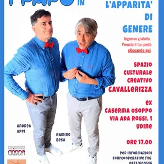

mer 25 nov · dalle 17:00
TUTTA L'APPARITÀ DI GENERE
La Commissione Donne di Confcooperative FVG propone lo spettacolo teatrale “TUTTA L’APPARITA’ DI GENERE” con il duo comico i Papu il prossimo 25 novembre nell’ambito della Giornata Internazionale per l’eliminazione della violenza contro le donne. La Commissione Donne è impegnata…
 Indicazioni
Indicazioni
- Costi e prenotazioni
- Costo non indicato · Prenotazione non indicata
- Programma
- Programma da verificare. Apri la fonte ufficiale per orari e possibili aggiornamenti.
- In caso di maltempo
- Nessuna indicazione specifica pubblicata.
- Note
- Acquisito automaticamente dalla fonte.
L’EVENTO
Descrizione completa
La Commissione Donne di Confcooperative FVG propone lo spettacolo teatrale “TUTTA L’APPARITA’ DI GENERE” con il duo comico i Papu il prossimo 25 novembre nell’ambito della Giornata Internazionale per l’eliminazione della violenza contro le donne . La Commissione Donne è impegnata a sostenere e promuovere azioni per contrastare qualsiasi forma di violenza contro le donne. Ha quindi scelto – in occasione del proprio decennale dalla costituzione – di proporre il linguaggio teatrale e la comicità per riflettere su pregiudizi e su luoghi comuni che si ritrovano nella vita quotidiana lavorativa e personale e porre al centro la cultura del rispetto, della prevenzione e delle pari opportunità.
TUTTA L'APPARITÀ DI GENERE
Al mondo siamo tutti uguali! Quante volte abbiamo detto, sentito o letto questa frase? Molte. Ma, sinceramente, quante volte ne abbiamo avvertito l’ipocrisia? Uguali sì, ma in che senso? Alto basso magro grasso lungo corto. Ma, allora, perché non pacioccone? Quando parliamo di parità, a quale equilibrio ci riferiamo? Parità di chi, di che cosa? Quando, dove e, soprattutto, perché?
APPARITÀ non intende certo risolvere questi dubbi amletici (chi potrebbe farlo?) quanto piuttosto affrontarli a muso duro, protetti solo dalla maschera millenaria del Comico, dell’Arte dell’ironia capace di scardinare pregiudizi e luoghi comuni e di usare lo sberleffo per relegare populismo e conformismo nel passato più remoto dal quale provengono e dal quale, ahinoi, ancora oggi rigurgitano troppo spesso la loro acida bile. Perché “normale” e “diverso” sono un concetto così molto statistico ma così poco umano? La vera diversità da combattere, per essere rispedita con biglietto di sola andata nel Medioevo da cui proviene, è quella di chi si sente superiore agli altri, senza pensare al fatto che ciascuno di noi è unico e inimitabile, mai peggiore né migliore degli altri ma, per sua natura, sempre, unicamente e orgogliosamente “diverso”.
EVENTO GRATUITO SU PRENOTAZIONE ENTRO IL 20 NOVEMBRE
IL PROGRAMMA
Programma e orari
Appuntamenti raccolti dalle fonti elencate. Dove manca un orario, non è ancora disponibile in questa scheda.
Programma pubblicato
- Dal 2026-11-25 al 2026-11-25
INFORMAZIONI UTILI
Prima di partire
- Controllare la fonte prima di partire.
ORGANIZZAZIONE